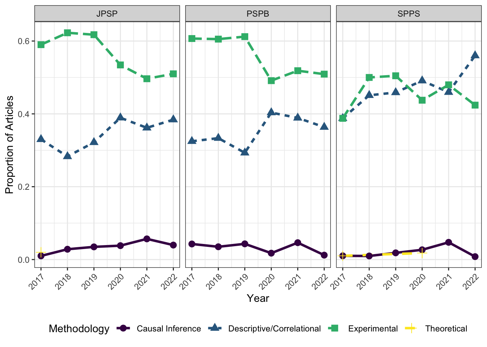

This paper uses the existing definitions and methods validated by Lam (2025) to categorize all articles from JPSP, SPPS, and PSPB in 2017-2022. It is the “Phase 1” of 3, which aims at identifying potential for causal inference methods in psychology.
library(ggplot2)
library(tidyr)
library(dplyr)
library(kableExtra)##
## Attaching package: 'kableExtra'## The following object is masked from 'package:dplyr':
##
## group_rowslibrary(readr)
data <- read_csv("phase1_results.csv")## Rows: 2172 Columns: 38## ── Column specification ───────────────────────────────────────────────────
## Delimiter: ","
## chr (19): DOI, Title, trimmed_title, CombinedAuthors, Source, Publisher, Art...
## dbl (17): ...1, CombinedCites, Year, GSRank, ECC, CitesPerYear, CitesPerAuth...
## lgl (2): DOI_missing, CitationURL
##
## ℹ Use `spec()` to retrieve the full column specification for this data.
## ℹ Specify the column types or set `show_col_types = FALSE` to quiet this message.There are 2172 articles in the dataset.
Now, let’s select the variables that are relevant (Journal, Year, and Methodologies). Each methodology has its own column (coded 0 or 1).
methodologies <- c("Experimental", "Causal_Inference", "Descriptive_Correlational",
"Theoretical", "Methodological", "Review_Meta_analysis", "Other")
data_clean <- data %>%
select(JournalAbbr, Year, all_of(methodologies)) %>%
rename(journal = JournalAbbr, year = Year)Now, we can reshape the data to long format and only keep the categories that have a value of 1. Since these categories are mutually exclusive (in the way they are coded, although not theoretically), there should only be one category per row.
long_data <- data_clean %>%
pivot_longer(
cols = all_of(methodologies),
names_to = "category",
values_to = "value"
) %>%
filter(value == 1)Then, we can count the number of articles categorized in each methodology by journal and year (i.e., for each journal, how many articles are in each of the 6 categories within each year?)
category_counts <- long_data %>%
group_by(journal, year, category) %>%
summarize(total_rows = n(), .groups = "drop")Next, we can calculate those proportions, again grouping by journal and year
category_proportions <- category_counts %>%
group_by(journal, year) %>%
mutate(proportion = total_rows / sum(total_rows)) %>%
ungroup()Then, we can clean up the category names (e.g., Descriptive Correlational should be Descriptive/Correlational). I made the mistake of not knowing this in my published article!
journal_yearly_summary <- category_proportions %>%
mutate(
category = gsub("_", " ", category),
category = gsub("Descriptive Correlational", "Descriptive/Correlational", category),
category = gsub("Review Meta analysis", "Review/Meta-analysis", category)
) %>%
arrange(journal, year, category)One of the goals is to examine the proportion of articles that use a given methodology by journal.
mean_props <- data_clean %>%
group_by(journal) %>%
summarize(
Experimental = round(mean(Experimental, na.rm = TRUE), 3),
Causal_Inference = round(mean(Causal_Inference, na.rm = TRUE), 3),
Descriptive_Correlational = round(mean(Descriptive_Correlational, na.rm = TRUE), 3),
Theoretical = round(mean(Theoretical, na.rm = TRUE), 3),
N = n(),
.groups = "drop"
)
mean_props## # A tibble: 3 × 6
## journal Experimental Causal_Inference Descriptive_Correlat…¹ Theoretical N
## <chr> <dbl> <dbl> <dbl> <dbl> <int>
## 1 JPSP 0.555 0.036 0.349 0.003 744
## 2 PSPB 0.554 0.031 0.351 0 734
## 3 SPPS 0.457 0.022 0.471 0.004 694
## # ℹ abbreviated name: ¹Descriptive_CorrelationalAs expected, the three social/personality journals do a lot of Experimental/Correlational work. It might be worth digging deeper into those categorized as “Causal Inference”, since I have a feeling many of them aren’t quite causal.
Regarding between-journal differences, JPSP publishes the most experimental work, while SPPS does more desriptive/correlational work. This, I susepct, could be due to how experiments are well-respected in social psych? JPSP as the top journal might prefer such ‘gold standard’ studies, while SPPS might be more willing to take in high-quality descriptive/correlational studies.
Next, we can generate some plots! We can focus on the main 4 categories (as reported in Lam, 2025).
journal_labels <- c("JPSP" = "JPSP", "PSPB" = "PSPB", "SPPS" = "SPPS")
main_categories <- c("Experimental", "Causal Inference", "Descriptive/Correlational", "Theoretical")
trends_plot <- ggplot(journal_yearly_summary %>% filter(category %in% main_categories),
aes(x = year, y = proportion,
linetype = category, shape = category,
color = category,
group = category)) +
geom_line(linewidth = 1.2) +
geom_point(size = 3) +
scale_color_viridis_d(option = "D") +
labs(x = "Year", y = "Proportion of Articles",
linetype = "Methodology", shape = "Methodology", color = "Methodology") +
facet_wrap(~journal, labeller = labeller(journal = journal_labels)) +
scale_x_continuous(breaks = 2017:2022) +
theme_bw() +
theme(legend.position = "bottom",
axis.text.x = element_text(angle = 45, hjust = 1))
print(trends_plot)
There are no obvious linear trends, though SPPS seems to be having increases in descriptive/correlational studies. This can reflect 1) the methodological conservatism found in Lam (2025) or 2) a timeframe too short to detect any meaningful trends within the field.